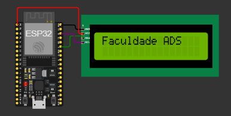

Anotações
Durante o semestre revi, aprendi e apliquei novos conceitos. Aprendi sobre a utilização de funções como por exemplo: map e millis, e função Setup e Loop, necessário para executar um processo uma vez ou repetir o processo várias vezes voltado para a linguagem C++. Pude rever conceitos sobre o funcionamento dos microcontroladores Arduino e do ESP32, aprendidos anteriormente e implementalos com novos conhecimentos.
Comandos Básicos:
pinMode(pin, OUTPUT) // Configura o pino como saída;pinMode(pin, INPUT) // Configura o pino como entrada;- Ex: pinMode(LED, OUTPUT) = define LED como saída;
- Ex: pinMode(BUTTON, INPUT) = define BUTTON como entrada.
digitalWrite(pino, valor); - Escreve um valor para uma entrada ou saída;
- Ex: digitalWrite(4, 1) = ON, digitalWrite(4, 0) = OFF.
digitalRead(pino); - Ele verifica se no pino x houve entrada de energia;
- Ex: digitalRead(3), se tiver energia, digitalRead = 1, se não houver digitalRead = 0.
analogWrite(pino, valor); - 256 Bits (1/4 do analog read);
- Ex: Analogwrite (A1, 512).
analogRead(pino); - Lê de 0V até 5V;
- Devolve em 1024 bits;
- Ex: AnalogRead(A0), 0% 0V = 0, 50% 2,5V = 512, 100% 5V = 1024.
Arduino
O Arduino é uma plataforma que combina hardware e software. Ele é conhecido por ser simples de usar e é muito popular porque permite conectar uma grande variedade de componentes, como botões, LEDs, sensores e outros dispositivos eletrônicos. Ele é muito usado em projetos de automação, arte interativa, robótica e muito mais, devido sua facilidade de uso e versatilidade.
ESP32
O ESP32 é um microcontrolador, mas possui recursos adicionais, como Wi-Fi e Bluetooth embutidos. Essas características o tornam ideal para projetos de IoT (Internet das Coisas), nos quais dispositivos precisam se comunicar pela internet. Isso abre um mundo de possibilidades, desde casas inteligentes até sistemas de monitoramento remoto.
Exercícios
Sistema Semáforo - Arduino
int vermelho = 3;
int amarelo = 4;
int verde = 5;
int Pvermelho = 6;
int Pverde = 7;
int button = 2;
bool estadoBotao = false;
int tempo_intermitente = 1000;
unsigned long millisTarefa1 = millis();
unsigned long millisTarefa2 = millis();
unsigned long millisTarefa3 = millis();
unsigned long millisTarefa4 = millis();
unsigned long millisTarefa5 = millis();
unsigned long tempoInicioBotao = 0;
bool botaoPressionado = false;
void setup() {
pinMode(vermelho, OUTPUT);
pinMode(amarelo, OUTPUT);
pinMode(verde, OUTPUT);
pinMode(Pvermelho, OUTPUT);
pinMode(Pverde, OUTPUT);
pinMode(button, INPUT_PULLUP);
// Pisca amarelo 3x
for (int i = 0; i < 3; i++) {
digitalWrite(amarelo, HIGH);
delay(1000);
digitalWrite(amarelo, LOW);
delay(1000);
}
}
void loop() {
estadoBotao = digitalRead(button);
if (estadoBotao == LOW && !botaoPressionado) {
botaoPressionado = true;
tempoInicioBotao = millis();
}
if (botaoPressionado && (millis() - tempoInicioBotao >= 10000)) { // 10 segundos de espera
botaoPressionado = false;
acionamentoBotao();
}
tarefa1();
tarefa2();
tarefa3();
tarefa4();
tarefa5();
}
void tarefa1() {
if ((millis() - millisTarefa1) > 6000) {
digitalWrite(vermelho, HIGH);
digitalWrite(Pvermelho, LOW);
digitalWrite(Pverde, HIGH);
millisTarefa1 = millis();
}
}
void tarefa2() {
if ((millis() - millisTarefa2) > 5000) {
digitalWrite(Pverde, LOW);
digitalWrite(Pvermelho, HIGH);
delay(500);
digitalWrite(Pvermelho, LOW);
delay(500);
digitalWrite(Pvermelho, HIGH);
delay(500);
digitalWrite(Pvermelho, LOW);
delay(500);
digitalWrite(Pvermelho, HIGH);
millisTarefa2 = millis();
}
}
void tarefa3() {
if ((millis() - millisTarefa3) > 1000) {
digitalWrite(vermelho, LOW);
digitalWrite(Pvermelho, HIGH);
digitalWrite(verde, HIGH);
millisTarefa3 = millis();
}
}
void tarefa4() {
if ((millis() - millisTarefa4) > 5000) {
digitalWrite(verde, LOW);
digitalWrite(amarelo, HIGH);
millisTarefa4 = millis();
}
}
void tarefa5() {
if ((millis() - millisTarefa5) > 2000) {
digitalWrite(amarelo, LOW);
millisTarefa5 = millis();
}
}
void acionamentoBotao() {
// Interrompe o ciclo normal e aciona o ciclo para pedestre atravessar
digitalWrite(verde, LOW);
digitalWrite(amarelo, HIGH);
delay(2000);
digitalWrite(amarelo, LOW);
digitalWrite(vermelho, HIGH);
digitalWrite(Pvermelho, LOW);
digitalWrite(Pverde, HIGH);
delay(10000);
digitalWrite(Pverde, LOW);
digitalWrite(Pvermelho, HIGH);
delay(2000);
digitalWrite(Pvermelho, LOW);
millisTarefa1 = millis();
millisTarefa2 = millis();
millisTarefa3 = millis();
millisTarefa4 = millis();
millisTarefa5 = millis();
}
Sistema Fotorresistor - Arduino
int sensorValue = 0;
int LED = 9;
void setup(){
pinMode(A0, INPUT);
Serial.begin(9600);
pinMode(LED, OUTPUT);
}
void loop(){
// Leitura do valor no sensor
sensorValue = analogRead(A0);
// Mostra o valor lido no Serial
Serial.println(sensorValue);
//Mapeia a leitura do sensor para o range correspondente do led
analogWrite(LED, map(sensorValue, 0, 1023, 0, 255));
delay(100); // Wait for 100 millisecond(s)
}
Sistema Write/Print com Serial - ESP32

Componentes utilizados:
- ESP 32
- Liquid Crystal Display (LCD)
Este sistema foi feito para mostrar uma mensagem escrita pelo usuário no LCD, utilizando a comunicação Serial.
Neste exercício precisei pesquisar sobre o funcionamento da função Serial, para saber como fazer a mensagem escrita ser lida e apresentada no display.
- ESP 32
- Liquid Crystal Display (LCD)
Este sistema foi feito para mostrar uma mensagem escrita pelo usuário no LCD, utilizando a comunicação Serial.
Neste exercício precisei pesquisar sobre o funcionamento da função Serial, para saber como fazer a mensagem escrita ser lida e apresentada no display.
#include LiquidCrystal_I2C.h
LiquidCrystal_I2C LCD = LiquidCrystal_I2C(0x27, 16, 2);
String mensagemAnterior = ""; // Variável para armazenar a mensagem anterior
void setup() {
Serial.begin(9600); // Inicia a comunicação serial
LCD.init();
LCD.backlight();
LCD.setCursor(0, 0);
LCD.print("Olá");
delay(1000);
LCD.setCursor(0, 1);
LCD.print("Sistema Pronto");
}
//Função para ler, verificar e atualizar a mensagem
void loop() {
if (Serial.available() > 0) { // Verifica se há dados disponíveis na porta serial
String novaMensagem = Serial.readString(); // Lê a mensagem serial
if (novaMensagem != mensagemAnterior) { // Verifica se a mensagem é diferente da anterior
LCD.clear(); // Apaga a mensagem anterior no LCD
escreve(0, 1, novaMensagem); // Escreve a nova mensagem no LCD
mensagemAnterior = novaMensagem; // Atualiza a mensagem anterior
}
}
}
//Função para mostrar mensagem no LCD
void escreve(int col, int lin, String msg) {
LCD.setCursor(col, lin);
LCD.print(msg);
}